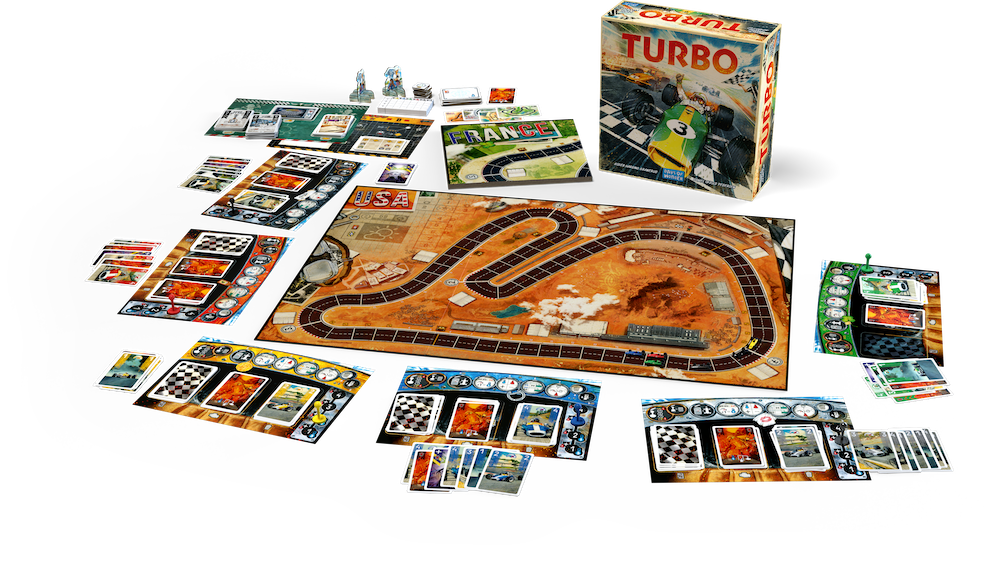
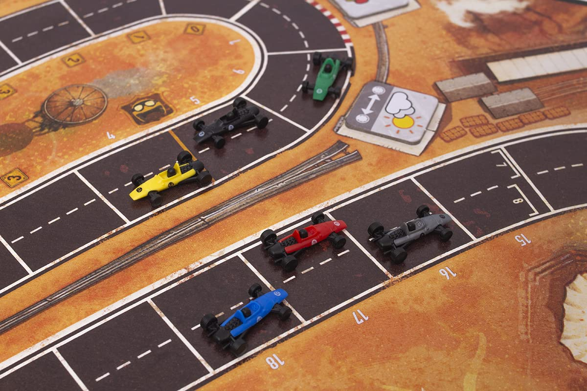
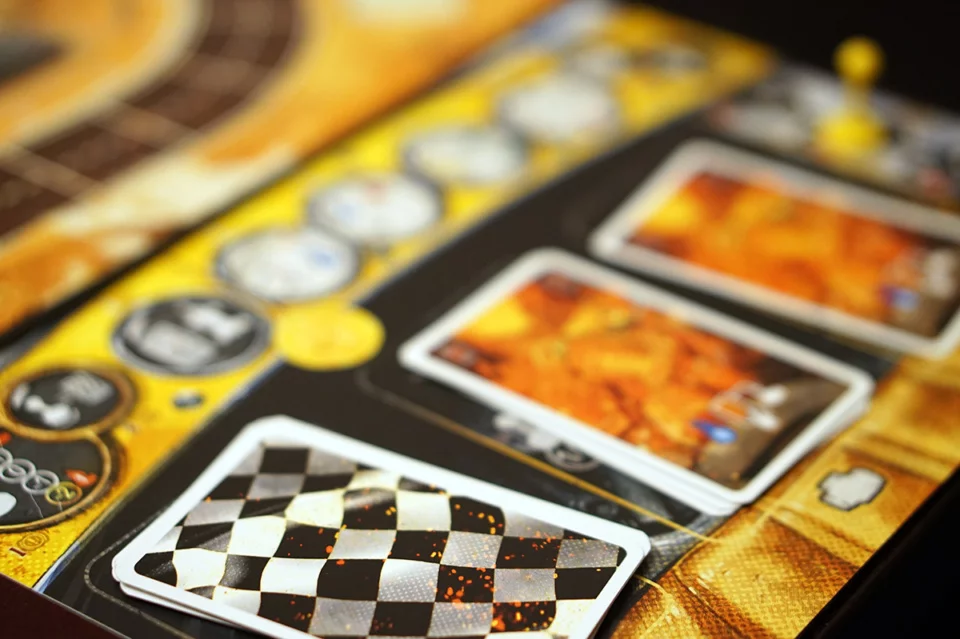

Czym jest Turbo?
Jest to gra wyścigowa, w której kluczowym elementem jest wystawianie odpowiednich kart, co wpływa na tempo i strategię rozgrywki. Gracze muszą podejmować decyzje dotyczące tego, które karty zagrać w danym momencie, aby maksymalizować swoje szanse na zwycięstwo i wyprzedzać przeciwników. Każda karta może oferować unikalne zdolności lub bonusy, co dodaje głębi strategii i wymaga od graczy przewidywania ruchów innych uczestników. W rezultacie gra staje się emocjonującym wyścigiem, w którym umiejętność planowania i elastyczność w dostosowywaniu strategii do zmieniającej się sytuacji są kluczowe dla osiągnięcia sukcesu.
Dlaczego jest ciekawe?
Gra potrafi doprowadzić do naprawdę intensywnych sytuacji, w których wszyscy gracze są mocno zaangażowani i skoncentrowani na dążeniu do zwycięstwa. Ta intensywność sprawia, że każda decyzja staje się kluczowa, a napięcie rośnie z każdą rundą. Dodatkowo, nie ma powodu do zmartwień, nawet jeśli ktoś na początku znajduje się na ostatnim miejscu, ponieważ mechanika gry pozwala na łatwe powroty do rywalizacji. Dzięki temu każdy gracz ma szansę na zaskakujący zwrot akcji i ostateczne zwycięstwo, co czyni rozgrywkę jeszcze bardziej emocjonującą.
Czy polecam początkującym graczom?
Definitywnie tak, to najprostsza gra spośród wymienionych, co czyni ją idealną dla osób stawiających pierwsze kroki w świecie planszówek. Dzięki przystępnej mechanice mogą w nią grać nawet najbardziej początkujący gracze, co sprawia, że jest świetnym wprowadzeniem do gier planszowych. Co więcej, dzięki modułom uwzględnionym w pudełku, gra staje się coraz bardziej skomplikowana, co pozwala na stopniowe odkrywanie nowych strategii i mechanik. To stopniowe wprowadzanie w bardziej złożone elementy gier ułatwia przesiadkę na inne tytuły, zwiększając pewność siebie i umiejętności graczy.